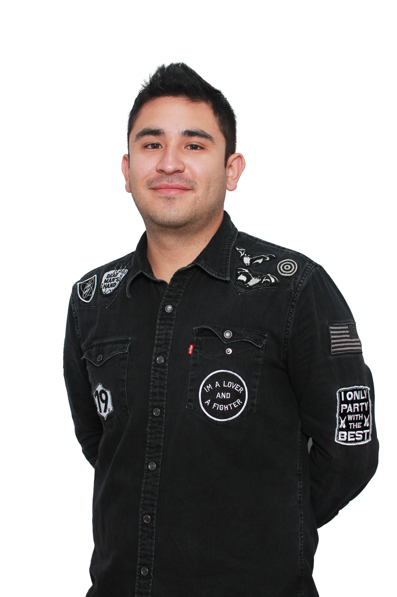

I'm just a simple dude
Located in Orlando
Introduction
Hi, my name is Fernando, I've always been into computers! I built my first computer in middle school and have been a computer nerd ever since. I enjoy programming and want to make it my career from now on! I currently live in Orlando and wish I could work remotely from here!
- I am hard working
- I am able to focus
- I am a great team player when I get to work in teams